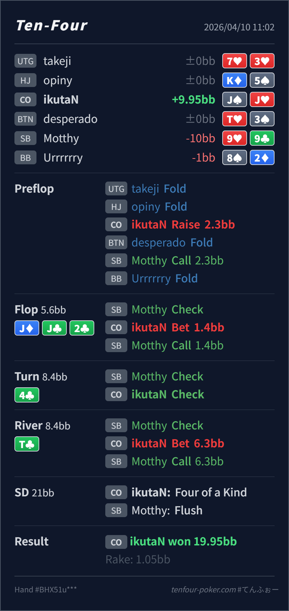

Preflop
良い
CO の J♠J♥ は標準 open の明確な value 上位です。
主論点は、CO open vs SB defend の single-raised pot で J♦ J♣ 2♣ / 4♣ / T♣ に対して、turn 4♣ が SB の continue range をどれだけ押し上げ、それでも CO がどの value bucket を bet と check に振り分けるかです。結論は、preflop open、flop の small c-bet、turn の check-back、river の大きめ value bet は全体としてかなり自然です。レンジ全体では turn で少し slowdown しやすい node ですが、J♠J♥ はその中でもかなり check に向く最上位 combo です。
J♠J♥9♦9♣J♦ J♣ 2♣ / 4♣ / T♣J♦ J♣ 2♣ は CO range が強く、small c-bet を高頻度で使いやすい board です。J♠J♥ はその最上位で、広く残してもらう打ち方が合います。4♣ は SB の flop continue range に多い club 系 combo を一気に改善させるので、CO range 全体は blank turn より slowdown しやすくなります。JJ, 22, 一部 Jx を持てるぶん nut advantage を維持しています。特に J♠J♥ は club を持たず、相手の flush density を消さずに残せるので、check-back trap と相性が良いです。T♣ で SB が check したあとの range は flush を中心に bluff-catcher が多くなりやすく、J♠J♥ は absolute top なので大きく取りにいって問題ありません。J♠J♥9♦9♣2.3BB, SB call 2.3BBJ♦ J♣ 2♣ / 4♣ / T♣1.4BB, SB call6.3BB, SB callJ, Villain flush
良い
CO の J♠J♥ は標準 open の明確な value 上位です。
J♦ J♣ 2♣良いJ♠J♥ は absolute top で、range c-bet の small size に自然に乗ります。
4♣良い
range 全体では少し slowdown しつつ、J♠J♥ は club を持たず flush を消さないので check-back trap に向きます。
T♣良いJ♠J♥ は absolute top なので、薄く刻むより大きく value を取るのが主軸です。
| 論点 | その場で起きがちな見え方 | どこがズレたか | 次回の基準 |
|---|---|---|---|
turn 4♣ の node | 3枚目 club は危険なので、毎回打ち切るか毎回止まるかの二択に見えやすい | 実際はその中間で、SB range は強くなる一方、CO も boats と JJ を持って nut advantage は残しています。range 全体では slowdown しつつ、combo ごとに bet/check を分ける node です。 | 相手の made hand が増えるか と こちらの nut advantage が残るか を分けて見る |
river T♣ の value | 4枚目 club が落ちると board が怖く見えて、check back か小さめに寄せたくなる | J♠J♥ は相手の flush に対して完全に上で、しかも SB の check range は second-best made hand が多いです。ここは texture の怖さより、自分の combo が相手 range に対してどこにいるかを優先して大きく取ってよい場面です。 | 4flush board でも、自分が absolute top なら相手の bluff-catcher 密度に合わせて polar に打つ |
| ストリート | その時点の見え方 | 判断の軸 | 評価 | コメント |
|---|---|---|---|---|
| Preflop | SB defend range には suited hand, middle pair, broadway が広く残ります。 | CO の J♠J♥ は標準 open の明確な value 上位です。 | 良い | ここは問題ありません。 |
Flop J♦ J♣ 2♣ | CO は overpair, Jx, overcards, backdoor を広く持ち、SB は pair と club 系を中心に continue します。 | J♠J♥ は absolute top で、range c-bet の small size に自然に乗ります。 | 良い | 1.4BB は相手の弱い continue を広く残せる良いサイズです。 |
Turn 4♣ | SB の flop call range の club 系がかなり強化されますが、CO 側も JJ/22/Jx で nut advantage は維持しています。 | range 全体では少し slowdown しつつ、J♠J♥ は club を持たず flush を消さないので check-back trap に向きます。 | 良い | bet 継続も候補ですが、この combo は check にかなり寄せやすいです。 |
River T♣ | SB の check range は flush, 2x, pocket pair の club など bluff-catcher 寄りに寄りやすいです。 | J♠J♥ は absolute top なので、薄く刻むより大きく value を取るのが主軸です。 | 良い | 6.3BB は自然です。相手が flush を降ろしにくいなら overbet まで候補にできます。 |
相手の equity が伸びた と こちらの nut advantage が消えた を同一視しない方が整理しやすいです。6.3BB くらいがちょうどよい落とし所です。